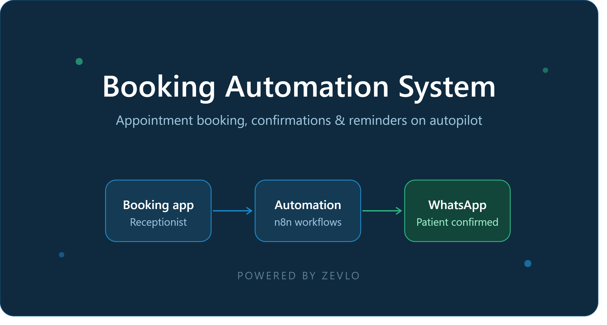
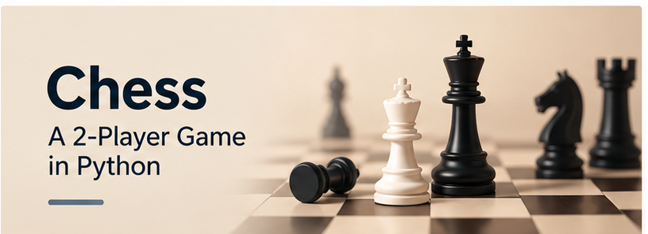
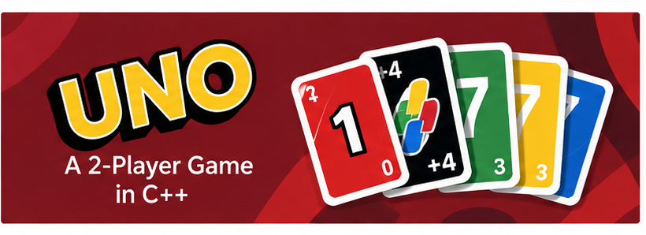
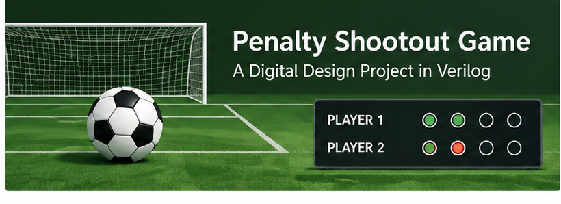
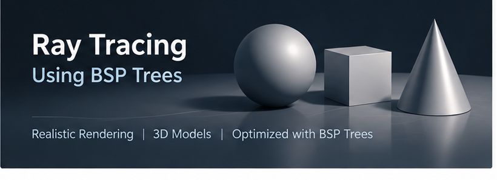

My Projects
Here are some of the projects I have worked on across software
development, automation, databases, digital design, and computer graphics.
Booking Automation System

A WhatsApp appointment automation tool built for clinics.
Receptionists enter bookings through a simple phone app,
which automatically sends patients WhatsApp confirmations
and reminders. Built with n8n, Google Sheets, the Twilio
WhatsApp API, and a custom PWA front end, and deployed live
at a real clinic.
Chess Game in Python

Developed a fully interactive two-player chess game in Python
as part of a team. The game uses object-oriented programming
and includes rule validation, turn-based logic, and a
graphical user interface.
Gym Management Database System
Designed and implemented a comprehensive gym management
database in SQL with a partner. The system manages
memberships, trainers, payments, and schedules through
a structured relational database.
UNO Card Game in C++

Developed a fully functional two-player UNO game in C++
as part of a three-person team. The game implements card
logic, player turns, game rules, and win-condition tracking.
Penalty Shootout Game in Verilog

Designed and implemented a keyboard-controlled football
penalty shootout game in Verilog as part of a four-person
team. The project used finite state machines and input
signal processing to implement the game's control logic.
Ray Tracing using BSP Trees

Developed a 3D ray-tracing engine in C++ as part of a
three-person team, using Binary Space Partitioning trees
to improve rendering efficiency. The project included
scene loading, lighting, realistic shading, and rendering
different 3D models.
Project List
- Booking Automation System
- Chess Game in Python
- Gym Management Database System
- UNO Card Game in C++
- Penalty Shootout Game in Verilog
- Ray Tracing using BSP Trees
Technical Skills
Programming Languages:
Python, HTML/CSS, SQL, C++, C, Verilog
Tools & Technologies:
Visual Studio Code, PyCharm, AWS, Git,
SQL Server Management Studio, Vivado